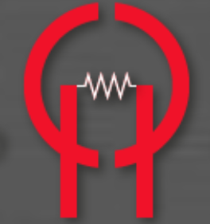
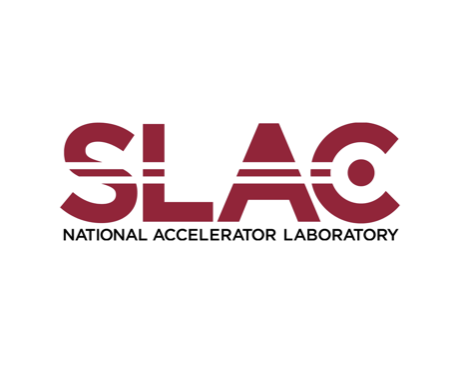
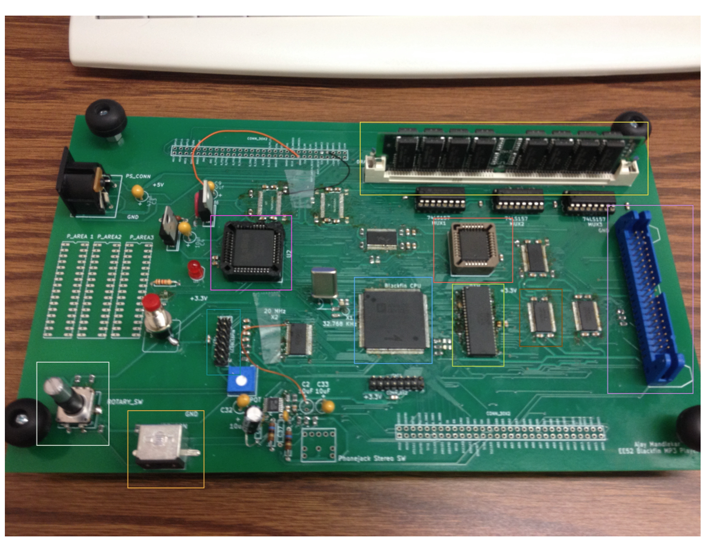
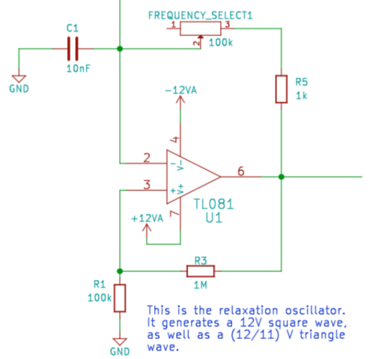
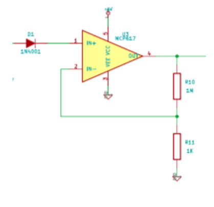

Ajay U. Mandlekar – Projects
Open-Source Software
 |
robomimic I led the development of robomimic, a framework for robot learning from demonstrations. |
 |
robosuite I helped develop and currently maintain robosuite, a robot simulation benchmark powered by the MuJoCo physics engine. |
Undergraduate Research and Work Experience
Apple iOS Location and Motion SWE Intern I spent a summer working at Apple. It was my first experience working with deep learning models like CNNs. I was very fortunate to have Jason Gauci as my mentor - I learned a great deal from him. I also had the opportunity to present my work to Craig Federighi, which was awesome. |
|
 |
Caltech High-Speed Integrated Circuits I spent a summer working in the Caltech High-Speed Integrated Circuits lab under Professor Ali Hajimiri. I implemented a feedback loop consisting of both hardware and software interfaces, allowing for a wireless power transfer prototype. You can find a video about some of the latest developments on the project below. [video] |
|
 |
SLAC National Accelerator Laboratory I spent a summer working at the SLAC National Accelerator Laboratory under Professor Tor O. Raubenheimer and Dr. Juhao Wu. I investigated whether harmonic lasing could be used to make the shift towards higher energy radiation. This was my first research experience - I was very fortunate to have Professor Tor O. Raubenheimer and Dr. Juhao Wu as mentors who took time to teach me how to approach difficult scientific problems. [report] [publication] |
Undergraduate Projects
|
 |
Blackfin MP3 Player I built an MP3 player over 2 quarters in sophomore year for our embedded systems project class. By far the most difficult thing I have ever had to do. It even almost worked. You can find an extensive report (aka the longest thing I've ever written) below. Thanks Glen! [report] |
Netflix Challenge A couple of my friends and I competed took a project class where we had to essentially participate in the Netflix Challenge. We leveraged a Netflix dataset of user-movie ratings to build a recommender system. This was a great experience in implementing models from papers and working with large datasets. We placed 3rd in our class. |
|
 |
Analog Function Generator I built an analog function generator from scratch for a project in senior year! It can generate a square wave, a triangle wave, and a sine wave with different voltage amplitudes and frequencies. [report] |
|
 |
Smart Dog Bowl I built a dog bowl that can open automatically when a special IR tag (worn by a dog) comes close enough. [report] |